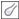

ыстрые ссылки на процедуры, описанные на этой странице:
• |
Можно выполнять смазывание, размазывание и перетекание красок в изображении. Смазывание обеспечивает эффект, напоминающий перемещение по сырым краскам. Размазывание имеет тот же эффект, что и стирание рисунка пастелью. Перетекание смягчает переход между цветами или резкими границами. Можно выполнять смазывание, размазывание и перетекание цветов во всем изображении или в определенной редактируемой области. Для получения дополнительных сведений об определении редактируемой области см. раздел Работа с масками.
Для изменения фигур, окружающих звезду, использовался инструмент Смазывание.
| Выполнение смазывания, размазывания и перетекания цветов в изображении |
1. |
В наборе инструментов выберите инструмент Эффект .
|
2. |
На панели свойств откройте меню выбора эффектов и выберите один из
следующих инструментов.
|
• |
Смазывание
|
• |
Размазывание
|
• |
Перетекание
|
3. |
Выберите кисть в списке Тип кисти на панели свойств.
|
4. |
Выберите кончик в меню выбора Форма кончика.
|
5. |
Введите значение в поле Размер для указания размера кончика.
|
6. |
Перетащите курсор в окне изображения.
|
Можно быстро выбрать квадратную или круглую форму кисти с
помощью кнопки Круглый кончик |
Copyright 2012 Corel Corporation. Все права защищены.